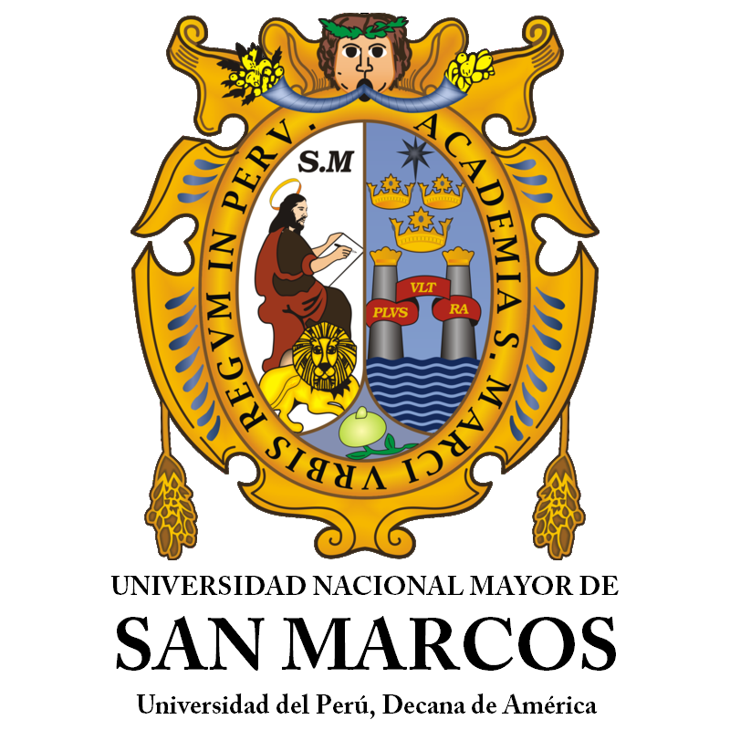

UNIVERSIDAD NACIONAL MAYOR DE SAN MARCOS
Facultad de Ingeniería Industrial
Escuela Profesional de Ingeniería de Seguridad y Salud en el Trabajo
Plan Anual de Seguridad y Salud en el Trabajo
Sistema integrado para consultar la documentación de prevención de riesgos laborales y gestión ambiental.